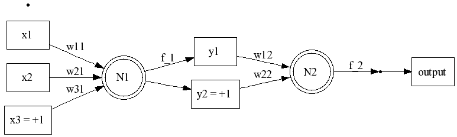

Created Thursday 21 November 2013
- http://page.mi.fu-berlin.de/rojas/neural/chapter/K7.pdf
- http://jeremykun.com/2012/12/09/neural-networks-and-backpropagation/
Motivation for the Backpropagation Algorithm
- The total error E is actually function of the weights! Each training example is fixed. The weights are the only parameters that can minimize the error function.
- The total error E is continuous and differentiable. Each impulse function is continuous and differentiable. E is built via composition and summation of the impulse functions. Thus, its gradient exists.
- As a result, we can use the method of gradient descent to find the values of the weights. This is essentially all that the backpropagation algorithm is.
The Gradient of `E`
Let's start with the case of a single-layer network with only a single neuron.
Then `E_i` reduces to `(o_(i1) - t_(i1))^2`, or dropping the extra subscript for the only neuron, `E_i = (o_i - t_i)^2`. But wait there's more! Since its a single neuron, the output is just the value of the neuron's impulse function `f`, so
`E_i = (f(bb x_i) - t_i)^2 = [phi(sum_k w_k x_(ik)) - t_i]^2`.
Thus, `E = sum_i [phi(sum_k w_k x_(ik)) - t_i]^2`.
The gradient of E is defined as
`grad E = ((dE)/(dw_0),... ,(dE)/(dw_k))`.
Let's compute a `(dE)/(dw_j)` nice and slow. Recall `E` is the sum of `E_i`s.
`(dE_i)/(dw_j) = (d)/(dw_j) [phi(sum_k w_k x_(ik)) - t_i]^2`
`t_i` and each `x_(ik)` are constants. Also, we treat each `w_i != w_j` as constants. So the expression can be treated like this:
`(dE_i)/(dw_j) = (d)/(dw_j) (phi(C + w_j x_(ij)) - D)^2`
where `C` and `D` are constants. Applying the chain rule twice (once on the squared term and then on `phi`)
`(dE_i)/(dw_j) = 2(phi(C + w_j x_(ij)) - D) xx (d)/(dw_j)(phi(C + w_j x_(ij)) - D)`
` = 2(phi(C + w_j x_(ij)) - D) xx phi'(C + w_j x_(ij)) xx x_(ij)`
` = 2[phi(sum_k w_k x_(ik)] - t_i) xx phi'(sum_k w_k x_(ik)) xx x_(ij)`
Phew! Let's make a simplification. Recall the definition of the output `o_i`:
`(dE_i)/(dw_j) = 2(o_i - t_i) phi'(o_i) x_(ij)`
Thus:
`(dE)/(dw_j) = 2 sum_(i=1)^p (o_i - t_i) phi'(o_i) x_(ij)`
The gradient points in the direction of steepest ascent, so if we want to go to the minimum, just travel backwards along the gradient. In other words, add a negative multiple of `(dE)/(dw_j)` to the current weight `w_j` to go towards the minimum of `E`:
`w_j = w_j - eta sum_(i=1)^p (o_i - t_i) phi'(o_i) x_(ij)`
(We drop the "2" since it gets absorbed by `eta`. `eta` is called the learning parameter.)
- The backpropagation algorithm repeats this process until the error E is smaller than a preset value.
Let's step back for a minute. We're adjusting the weights (which are the real inputs) so that the error function E is at its global minimum (hopefully). The problem is how can we be sure its a global minimum? how can we be sure the adjustment doesn't overshoot the minimum? how can we be sure we don't oscillate near the minimum?
Enter the momentum.
More Complex Case
We still haven't seen why the backpropagation algorithm is named that way. Consider a slightly more complex network consisting of two layers and a single neuron in each layer.

The output of the network is no longer a simple application of the impulse function `f_2` for the neuron in the output layer.
Let `bb y = (y_1,y_2)` be the output of the hidden layer (the layer containing neuron `N_1`).
Then the output of the network is
`f_2(bb y) = phi(sum_k w_(k2)y_k)`
The good news is that for `w_(j2)` (the weights of the output layer), `(dE_i)/(dw_(j2))` reduces to the previous case.
`(dE_i)/(dw_(j2)) = 2(phi(C + w_(j2) y_j) - D) xx (d)/(dw_(j2))(phi(C + w_(j2) y_j) - D)`
` = 2(phi(C + w_(j2) y_j) - D) xx phi'(C + w_(j2) y_j) xx y_j`
` = 2[phi(sum_k w_(k2) y_k)] - t_i) xx phi'(sum_k w_(k2) y_k) xx y_j`
What about for the weights in the hidden layer?
`(dE_i)/(dw_(j1)) = (d)/(dw_(j1)) phi(sum_k w_(k2) y_k) - t_i]^2`
` = (d)/(dw_(j1)) phi(sum_k w_(k2) ((sum phi(sum_l w_(l1) x_(il))) - t_i]^2`
Continued...
{kind=link}